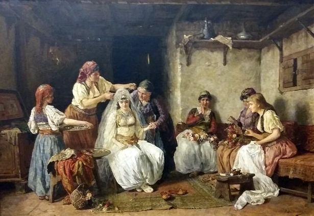
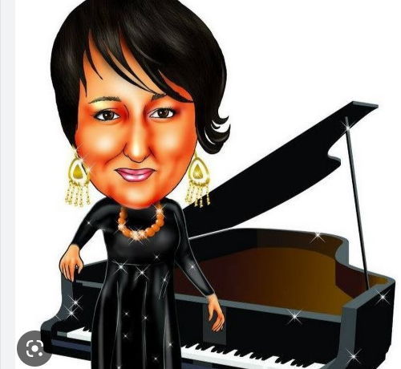

|
|

|
[*] Ova je jedna od više narodnih pjesama koja je upamtila «Pembe Ajšu», stvarnu ličnost koja je živjela u Sarajevu sredinom i u drugoj polovini XIX stoljeća. O njoj je vrijednu bilješku ostavio Kosta Hadži Ristić davne 1869. godine u svome radu «Iz Bosne i o Bosni», štampanog u «Danici» donoseći pri tome nepotpuni tekst pjesme o Pembe Ajši. Prema njegovim riječima, Pembe Ajša je bila udata za Fejzagu Alađuza, koji je upravo umro te 1869. godine. Hadži Ristić donosi interesantnu pojedinost iz života Pembe Ajše prema kojoj Pembe Ajša nije imala djece u braku sa Fejzagom Alađuzom, ali je «sama dovela inoču svome mužu, da bi mu ova rodila nasljednika». Izvor: Munib Maglajlić: Usmena lirska pjesma, balada i romansa. Institut za književnost i «Svjetlost», Sarajevo, 1991., str. 52-53. |
[*] «Voici l'une des quelques chansons qui évoquent "Pembe Ajša", un personnage réel qui vécut à Sarajevo dans la seconde moitié du 19e siècle. L'écrivain Kosta Hadži Ristić a laissé de précieuses informations à son sujet dans son ouvrage "De la Bosnie et sur la Bosnie", imprimé en 1869 chez "Danica", y compris le texte incomplet de la chanson « Pembe Ajša ». Il en ressort que cette Pembe Ajša avait été mariée à un certain Fejzag Aladjuz, qui venait juste de mourir en 1869. Hadži Ristić rapporte un détail fascinant à propos de cette Pembe Ajša : Elle n'eut pas d'enfants de son union avec Fejzag Alađuz, mais « c'est elle-même qui jeta une autre femme dans le lit de son mari, pour qu'elle lui donne un héritier !" Source : Munib Maglajlić : Poème lyrique oral, ballade et romance. Institut de Littérature et "Lumière", Sarajevo, 1991, p. 52-53. |